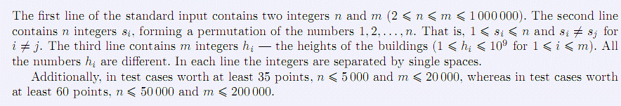
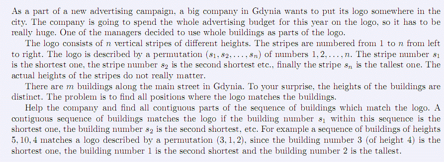
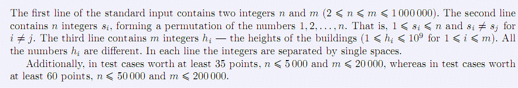
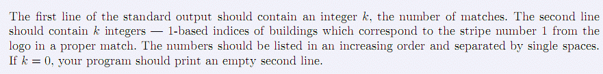
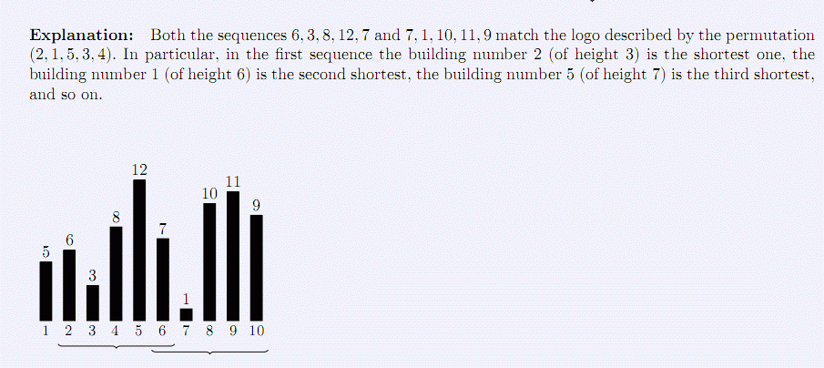

v
◆第一行包含两个整数n, m (2≤n≤m≤1000000)。
第二行包含n个整数si，构成1,2,…,n的排列，1≤si≤n且si≠sj。
第三行包含m个整数hi，表示建筑的高度(1≤hi≤109,1≤i≤m)，所有的hi均不相同。
每一行的整数之间用单个空格隔开。
◆至少35分的数据，n≤5000, m≤2000
◆至少60分的数据，n≤50000, m≤200000

作为新一轮广告大战的一部分，格丁尼亚的一家大公司准备在城市的某处设置公司的标志（logo）。公司经理决定用一些整栋的建筑来构成标志的组成部分。
v标志由不同高度的竖直条纹组成。这些条纹从左到右依次编号为1…n。标志用数字1,2,…,n的排列(s1,s2,…,sn)来描述。编号s1的条纹高度最低，编号s2的条纹第二低，…，编号sn的条纹最高。条纹的实际高度无关紧要。
v沿格丁尼亚城市的主干道共有m栋建筑，这些建筑的高度各不相同。问题是如何找出标志与建筑相匹配的所有位置。
v请帮助公司找出匹配标志的建筑序列的连续部分。若编号s1的建筑在序列中最低，编号s2的建筑在序列中第二低,…，那么这个连续的建筑序列就与标志匹配。例如，建筑高度的序列5,10,4与用编号排列(3,1,2)描述的标志相匹配，因为编号3的建筑(高度4)最低，编号1的建筑第二低，编号2的建筑最高

◆第一行包含两个整数n, m (2≤n≤m≤1000000)。
第二行包含n个整数si，构成1,2,…,n的排列，1≤si≤n且si≠sj。
第三行包含m个整数hi，表示建筑的高度(1≤hi≤109,1≤i≤m)，所有的hi均不相同。
每一行的整数之间用单个空格隔开。
◆至少35分的数据，n≤5000, m≤2000
◆至少60分的数据，n≤50000, m≤200000

第一行包含1 个整数k ，表示匹配的序列数目。
第二行包含k 个整数，分别为在正确匹配的每个序列中与标志编号1 的条纹相对应的第1 栋建筑的编号。这些数字按升序排列，用空格隔开。如果k=0 ，第二行为空行。
5 10
2 1 5 3 4
5 6 3 8 12 7 1 10 11 9
2
2 6

题解http://pan.baidu.com/s/1dEnBnOX